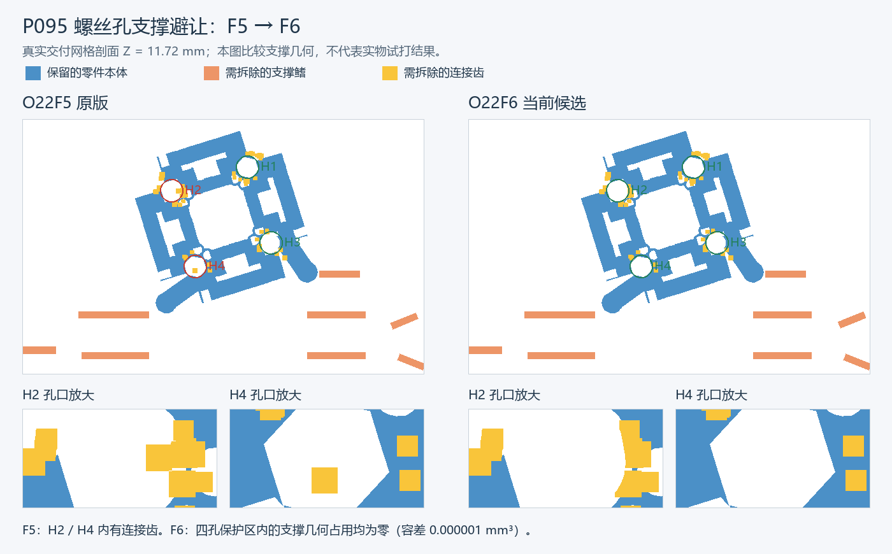

未放行，暂勿整批打印。螺孔支撑占用已清零，但部分零件清孔后的悬空起印和外部承托仍未通过完整路径检查。
14 盘 · 150 种 · 193 个实例。原版 65 种有支撑与孔位保护区交叠；新版所有本体网格与 F5 相同。原版保留。

“通过”仅指数字检查；F6 均尚未实物试打。此处所有下载仍是候选文件。
| 盘号 | 实例 | 悬空起印区 | 待处理路径 | 状态 | 涉及零件 | 文件 |
|---|---|---|---|---|---|---|
| D01 | 12 | 1 | 6 | 未通过 | P095, X058 | 候选 3MF |
| D02 | 7 | 1 | 4 | 未通过 | P073 | 候选 3MF |
| D03 | 19 | 0 | 1 | 未通过 | X038 | 候选 3MF |
| D04 | 20 | 3 | 2 | 未通过 | X046 | 候选 3MF |
| D05 | 7 | 0 | 0 | 数字检查通过 | 候选 3MF | |
| D06 | 17 | 0 | 3 | 未通过 | W007, X066 | 候选 3MF |
| D07 | 11 | 1 | 3 | 未通过 | X062 | 候选 3MF |
| D08 | 12 | 0 | 0 | 数字检查通过 | 候选 3MF | |
| D09 | 9 | 0 | 6 | 未通过 | P117, W016 | 候选 3MF |
| D10 | 15 | 2 | 0 | 未通过 | P035, P071 | 候选 3MF |
| D11 | 6 | 18 | 5 | 未通过 | P051, P093, P130, W017 | 候选 3MF |
| D12 | 16 | 29 | 0 | 未通过 | P130 | 候选 3MF |
| D13 | 19 | 0 | 0 | 数字检查通过 | 候选 3MF | |
| D14 | 23 | 0 | 0 | 数字检查通过 | 候选 3MF |
两处本体尖角加宽告警另见 孔边路径复核。未把这些原始告警改写为通过。